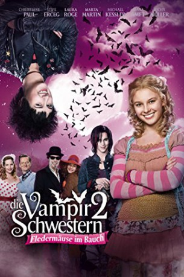

gesehen am 06.09.2018
gesehen am 06.09.2018Alternativ: Die Vampirschwestern 2 gesehen am 06.09.2018
 
 IMDB-Wertung: 5.4 / 10
IMDB-Wertung: 5.4 / 10  Metascore:
Metascore: 
Teen half vampire Dakaria falls in love with rock singer vampire Murdo. Dakaria, her friends and family have to face vampire Xantor who has dark plans.
Jahr: 2014
Dauer: 89 Minuten
FSK: 6
Land: Deutschland Studio: Sony Pictures GermanyTonspuren:
Untertitel:
Auflösung: 1080p (1920x1040) Größe: 4720 MB
Genre: Drama, Komödie, Abenteuer, Fantasy, Familie
Regisseur: Wolfgang Groos
Drehbuch: Franziska Gehm
Soundtrack: Helmut Zerlett
Darsteller:
 Christiane Paul als Elvira Tepes
Christiane Paul als Elvira Tepes Stipe Erceg als Mihai Tepes
Stipe Erceg als Mihai Tepes Georg Friedrich als Xantor
Georg Friedrich als Xantor Tim Oliver Schultz als Murdo
Tim Oliver Schultz als Murdo Richy Müller als Ali Bin Schick
Richy Müller als Ali Bin Schick Diana Amft als Krankenschwester Ursula
Diana Amft als Krankenschwester UrsulaDatei: X:\Kinder Collections\Vampirschwestern\Vampirschwestern 2 - Fledermäuse im Bauch!, Die (2014, FSK6, 1920x1040).mkv seit 20.07.2018
Festplatte: Kinder-Filme+Trick
 Alle Filme aus Gruppe 'Kinder Collections\Vampirschwestern'
Alle Filme aus Gruppe 'Kinder Collections\Vampirschwestern'